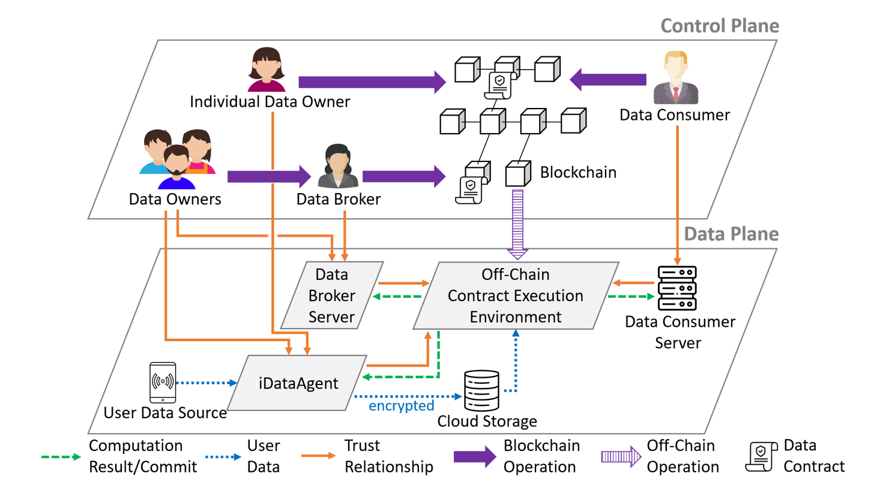
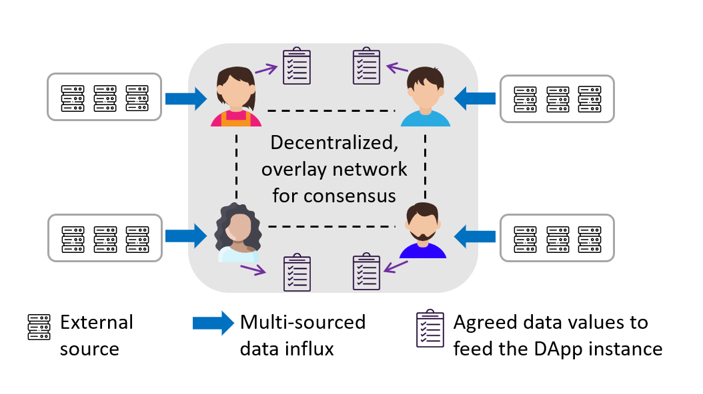

Trustworthy Knowledge Aggregation in an Untrusted World

PrivacyGuard - Enforcing Private Data Usage Control
This research addresses a long-standing privacy problem facing the digitized economy—individual data owners often lose control on how their data can be used once sharing the data with another party. This problem was epitomized by the 2015 Facebook-Cambridge Analytica Data Scandal, where millions of Facebook user profiles were acquired by Cambridge Analytica and then used for political purposes without user consent. To tackle this problem, we developed the PrivacyGuard platform to empower data owners with full control over the access and actual usage of their private data by any data consumer. PrivacyGuard combines blockchain smart contract and trusted execution environment (TEE) to enable transparent enforcement of private data computation tasks and fine-grained usage control. A core feature of PrivacyGuard is the atomic execution of off-chain result commitment and on-chain data usage contract fulfillment between data owners and data consumers in the mutually distrustful scenario. [Prototype souce code]

DecenTruth - A Decentralized, Truth Discovering Oracle System for DApps
For blockchain-based decentralization applications (DApps) to achieve real-world relevance, such as those for equity investment or insurance, they need to feed on data about the external world. However, validity of the external data is beyond the jurisdiction of blockchain consensus. DApp participants may suffer huge monetary or operational loss if the DApp feeds on data from faulty or malicious sources. This is known as the "external data challenge" or "oracle problem". Our solution, DecenTruth, leverages truth discovery (TD)—a data mining method—and asynchronous Byzantine fault-tolerant (BFT) consensus to realize a fully decentralized, truth discovering data feed system. It enables a group of mutually distrustful DApp participants to jointly estimate the ground truths of data objects and reliability of external sources from noisy and potentially conflicting (Byzantine) multi-sourced inputs.
Future Work
◾ Extend PrivacyGuard to accommodating federated learning/distributed machine learning tasks and breaking down information silos among mutually distrustful data owners, in the face of powerful adversaries who can create adaptive attack samples, employ advanced inference techniques, and/or control the network synchrony between distributed parties. This research will be at the intersection of fault-tolerant consensus/aggregation, trustworthy computing, and adversarial AI/ML.
◾ Explore using DecenTruth to tackle misinformation which has been plaguing the world of social media.